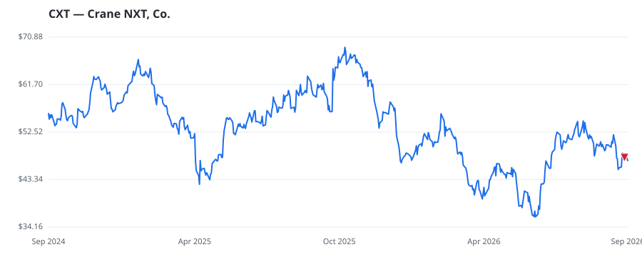

bullish · bearish · n/a — dots: price>SMA10 · SMA10>SMA50 · SMA50>SMA200 · up>down volume (20d)
Capital Goods · mid cap

Crane NXT Co is a industrial technology company that provides proprietary and trusted technology solutions to secure, detect, and authenticate what matters to its customers. It is a pioneer in proprietary micro-optics technology for securing physical products, and its sophisticated electronic equipment and associated software leverages proprietary core capabilities with detection and sensing technologies. The company operates in two segments which are Crane Payment Innovations (CPI) and Security and Authentication Technologies. MISCELLANEOUS FABRICATED METAL PRODUCTS · website
| Revenue | $1.7B | Net income | $145.1M |
|---|---|---|---|
| Operating income | $246.7M | Diluted EPS | $2.50 |
| Assets | $3.1B | Equity | $1.3B |